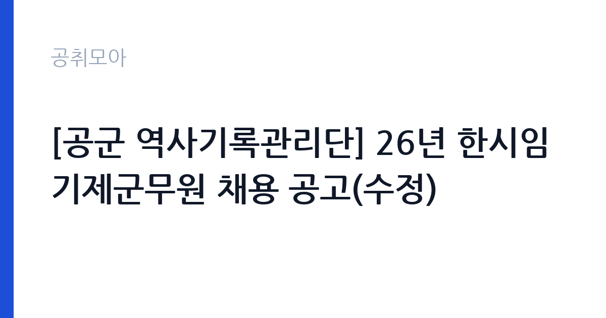

[국가기관] [공군 역사기록관리단] 26년 한시임기제군무원 채용 공고(수정)
국방부 · 충북 · 마감 2026-11-03 (D-10) · 출처 나라일터

한눈에 보는 모집 조건
| 기관 | 국방부 |
|---|---|
| 공고명 | [공군 역사기록관리단] 26년 한시임기제군무원 채용 공고(수정) |
| 고용형태 | 임기제 |
| 근무지 | 충북 |
| 게시일 | 2026-10-24 |
| 마감일 | 2026-11-03 (D-10) |
지원자격, 이렇게 읽으세요
- 인쇄 7호 1명
- 접수 ~2026-11-03 마감
- 세부 조건은 원문 공고문 확인
응시자격은 다섯 갈래 중 하나만 충족하면 됩니다. 학사학위 취득 후 임용예정 직무분야 실무경력 6개월 이상, 전문대학 졸업 후 관련 분야 경력 1년 이상, 학력과 무관하게 실무경력 1년 6개월 이상, 8급 이상 공무원으로서 관련 분야 경력 1년 이상, 마지막으로 임용예정 직무분야와 관련된 학사학위 취득자입니다. 여기서 말하는 직무분야는 시각·그래픽디자인 같은 디자인 제작 업무와 포토샵·일러스트 등 그래픽 작업이며, 관련학과는 인쇄·디자인학과, 사진학과 등이 제시되어 있습니다. 주의할 점은 경력 인정 기준입니다. 전일제 1일 8시간·주 40시간 근무를 기준으로 산정하므로, 시간제로 일한 경력은 근무기간과 기준 근무시간이 함께 적힌 경력증명서를 내야 인정받습니다. 자격요건 충족 시점은 최종시험 예정일인 2026년 12월 9일이고, 응시연령은 18세 이상(2008년 12월 31일 이전 출생자)입니다. 현역 군인이나 군무원은 임용예정일 전일까지 전역·퇴직이 가능해야 하며, 이 확인을 소속 근무지 인사부서에서 받아 표시해야 합니다. 남성은 병역을 마쳤거나 면제된 경우여야 합니다.
이 공고의 포인트
이 공고는 10월 23일자로수정된 변경공고라는 점을 먼저 봐야 합니다. 당초 채용기간이 2028년 1월 21일까지였는데 2027년 12월 31일까지로 줄었습니다. 즉 실제 계약 기간은 2027년 1월 1일부터 12월 31일까지 딱 1년입니다. 근무 형태도 전일제가 아니라 1일 7시간·주 35시간입니다. 월 급여 2,230,200원은 이 35시간 기준 금액이므로, 주 40시간 정규 군무원과 같은 월급으로 오해하면 안 됩니다. 대신 학사 학위에 경력 6개월만 있어도 응시할 수 있고, 디자인 관련 자격증 소지자는 우대됩니다. 근무지는 충북 청주이지만 원서 접수와 면접 장소는 충남 계룡으로 분리되어 있으니 이동 동선을 미리 계산해 두는 편이 좋습니다.
전형은 어떻게 진행되나
전형은 1차 서류전형, 2차 면접시험 순서로 진행되고 마지막에 신원조사를 거칩니다. 서류전형은 제출서류를 기준으로 응시자격과 경력의 적부를 심사하며, 선발예정인원의 3배수 이상을 합격자로 결정할 수 있습니다. 면접시험은 서류 합격자를 대상으로 다섯 가지 평가요소를 봅니다. 군무원으로서의 정신자세, 전문지식과 그 응용능력, 의사표현의 정확성과 논리성, 창의력·지적 발전가능성, 예의·품행 및 성실성입니다. 최종합격자는 신원조사 결과를 확인한 뒤 면접 성적 고득점자 순으로 결정됩니다. 최종합격 발표 이후라도 신원조사에서 임용결격사유가 확인되거나 채용 신체검사에서 불합격 판정을 받으면 임용되지 않습니다. 최종합격자가 임용을 포기하면 면접 불합격 기준에 해당하지 않는 사람 가운데 차순위자를 최종합격자 발표일로부터 6개월 이내에 추가합격자로 결정할 수 있습니다.
이런 분께 추천해요
- 포토샵·일러스트로 포스터나 홍보물 디자인을 직접 만들어 본 사람
- 대형 플로터로 실사 출력을 걸어 본 경험이 있는 디자인 실무자
- 군무원·공무원 경력을 살려 1년 단위 근무를 검토하는 8급 이상 경력자
지원 전 체크리스트
- 경력증명서에 근무기간·담당직무·기준 근무시간이 모두 적혀 있는지 확인했습니다. 담당 업무명이 없으면 경력이 인정되지 않습니다.
- 방문접수는 불가능하고 등기우편만 받습니다. 11월 3일자 우체국 소인분까지 유효하므로 마감 당일 발송도 접수됩니다.
- 봉투 규격은 33.5×24.5cm 일반서류봉투이고, 겉면에 붙임 8 서식 라벨을 부착해 주소·성명·응시직위·직급을 적어야 합니다.
- 현역 군인·군무원은 임용예정일 전일까지 전역·퇴직이 가능한지 소속 인사부서 확인을 받아 표시해야 합니다.
모집 일정과 제출 타이밍
원서접수는 10월 30일 금요일부터 11월 3일 화요일까지이고, 11월 3일 우체국 소인분까지 유효합니다. 서류전형 합격자는 11월 13일 금요일에 발표되며, 같은 날부터 11월 18일 수요일까지 신원조사 서류를 공군본부 인터넷 홈페이지에서 별도로 제출해야 합니다. 면접시험은 12월 11일 금요일 충남 계룡에서 열리고, 시간은 개별 통보됩니다. 최종합격자는 12월 15일 화요일에 발표되며 임용예정일은 2027년 1월 1일입니다. 응시표는 면접 당일 교부되므로 접수 단계에서 따로 챙길 필요는 없습니다. 다만 서류전형 합격자 발표와 면접 일정은 부대 사정에 따라 바뀔 수 있어 공군 인터넷 홈페이지 모집공고란을 주기적으로 확인해야 합니다.
직무 이해하기: 국가기관
공군 역사기록관리단은 군 기관 최초로 권역별 통합기록관 체계를 만든 조직입니다. 2023년 1월 통합기록관을 세우고 2024년부터 사령부·비행단·전대급 부대 기록관을 폐지해 기록물관리과와 북부·남부 통합기록관으로 업무를 모았습니다. 이번에 뽑는 인쇄 7호의 담당업무는 그래픽자료입니다. 구체적으로는 포스터와 각종 서식 템플릿 같은 디자인 제작, 대형 플로터를 이용한 실사 출력, 전자 앨범 형태의 디지털콘텐츠 제작, 그리고 디자인 자료의 관리와 백업입니다. 기록물을 활용한 전시나 기념사업 자료를 만드는 일도 이 직무의 연장선에 있습니다. 단순 편집이 아니라 기록물 콘텐츠를 시각 자료로 풀어내는 일이라는 점을 이해하고 지원해야 합니다.
자기소개서 작성 팁
자기소개서는 디자인 실무를 숫자와 산출물로 증명하는 데 집중하는 것이 좋습니다. 어떤 도구로 무엇을 만들었는지, 인쇄물이면 규격과 수량, 플로터 출력이면 소재와 크기, 전자 앨범이면 페이지 수와 배포 방식까지 구체적으로 적으세요. 경력이 6개월로 짧다면 짧은 기간에 맡은 업무의 범위를 넓게 서술하는 편이 유리합니다. 기관 특성상 기록물을 소재로 한 전시·기념 자료 제작이 반복되므로, 자료를 정리하고 백업하는 습관이나 원본 관리 경험을 한 문단 넣으면 직무 적합성이 분명해집니다. 반대로 디자인 감각만 강조하고 실제 수행 업무를 적지 않으면 서류전형에서 경력 증빙과 맞지 않아 불리할 수 있습니다.
면접 준비 포인트
면접은 다섯 가지 평가요소를 모두 건드립니다. 전문지식 문항에서는 포토샵·일러스트 작업 과정, 인쇄용 파일 설정, 플로터 출력 시 주의점 같은 실무 지식이 나올 수 있으니 본인이 했던 작업의 순서를 말로 설명할 수 있어야 합니다. 의사표현 문항은 답변 구조를 보므로 결론을 먼저 말하고 근거를 붙이는 방식으로 연습하세요. 군무원 정신자세와 품행·성실성은 군 조직 근무 특성상 자주 평가되는 항목이므로, 조직 규율과 보안 관리에 대한 인식을 짧게 정리해 두면 좋습니다. 면접 장소가 충남 계룡이고 시간은 개별 통보되니 전날 이동 계획을 세워 두는 편이 안전합니다.
급여·근무조건 읽는 법
보수는 공무원보수규정에 따른 한시임기제공무원 보수기준을 적용하며, 원문 공고문 3쪽에 월 급여 2,230,200원(1일 7시간·주 35시간 근무)으로 명시되어 있습니다. 여기에 가족수당, 시간근무수당, 정액급식비, 직급보조비가 별도로 붙습니다. 따라서 월 급여 항목만 보면 223만원대이지만 실제 지급액은 수당이 더해져 이보다 높아집니다. 반대로 실수령액은 세금과 부양가족 수에 따라 달라지므로 원문에서 확인해야 합니다. 연봉으로 환산한 수치는 공고문에 없어 원문에서 확인 대상입니다. 보험은 공무원연금과 건강보험이 의무가입이고, 고용보험은 본인이 원할 때 임용일로부터 3개월 이내에 가입할 수 있습니다. 퇴직금이 아니라 공무원연금법상 퇴직수당 지급 대상이라는 점도 기억해야 합니다. 공무원·군인연금 수급자는 임용 근무 기간 동안 연금 지급이 정지됩니다.
자주 묻는 질문
- 경력이 6개월 조금 안 되는데 지원할 수 있나요?
학사 학위 소지자는 실무경력 6개월 이상이 기준이고, 전문대 졸업자는 1년 이상, 학력과 무관하게 1년 6개월 이상 경로도 있습니다. 자격요건 충족 시점은 최종시험 예정일인 2026년 12월 9일이므로 그날까지 경력이 채워지는지를 기준으로 판단하시면 됩니다. 판단이 어려우면 채용부서(042-552-1912)에 먼저 문의하는 편이 안전합니다. - 인쇄 직류인데 디자인 업무만 하나요?
이번 직위의 담당업무는 그래픽자료로, 포스터·템플릿 디자인 제작, 대형 플로터 실사 출력, 전자 앨범 제작, 디자인 자료 관리·백업입니다. 인쇄 장비 운용 자체보다 기록물을 활용한 시각 자료 제작이 중심이라고 보시면 됩니다. - 채용기간이 왜 1년으로 줄었나요?
10월 23일자 변경공고에서 채용기간이 2028년 1월 21일까지에서 2027년 12월 31일까지로 조정되었습니다. 임용예정일은 2027년 1월 1일 그대로이므로, 실제 근무 기간은 2027년 한 해 1년입니다.
함께 보면 좋은 공고
[국가기관] 2026년 국립수목원 공무직근로자 채용공고 — 마감 2026-11-06[국가기관] 2026년 통일부 전문임기제 다급(영상PD) 경력경쟁채용 공고 — 마감 2026-11-02[국가기관] 2026년 제3회 공무직 근로자(행정사무원, 경비원, 청소원) 채용 공고 — 마감 2026-11-03출처: 나라일터 공개정보를 바탕으로 공취모아가 정리한 안내글입니다. 모집 조건·일정은 변경될 수 있으니 지원 전 반드시 원문 공고문을 확인하세요. 본 글은 정보 제공용이며 합격을 보장하지 않습니다.